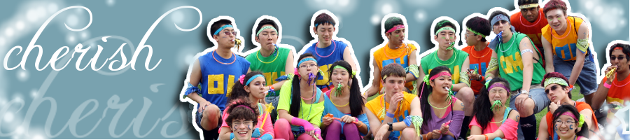
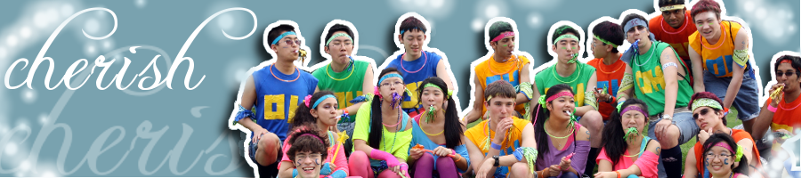

Class of 2011

Stephanie Sang
Stephanie joined Science Olympiad in the 5th grade, which meant that SO consumed literally half of her life - and perhaps sanity - up until she graduated. Along with co-captain Eugene Rabinovich, she helped lead her (amazing) team to the National Championship in 2011 in Madison, Wisconsin. Stephanie believes that while the science and knowledge gained from participating in Science Olympiad definitely shaped her life, it was the friendships formed with the members of her team and the competitors from other schools from which she derived the most fulfillment. Highlights include placing 2nd in the nation in Picture This and 5th in Fossils, as well as developing a lifelong grudge against birds. She will continue her studies at Cornell University with a double major in Biology (Ecology & Evolution) and Science of Earth Systems (Geological Sciences).